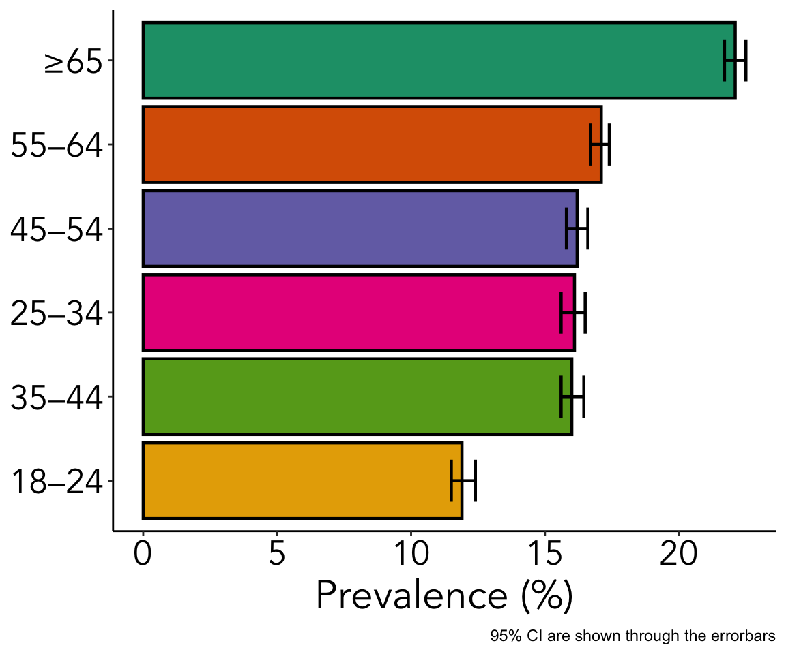
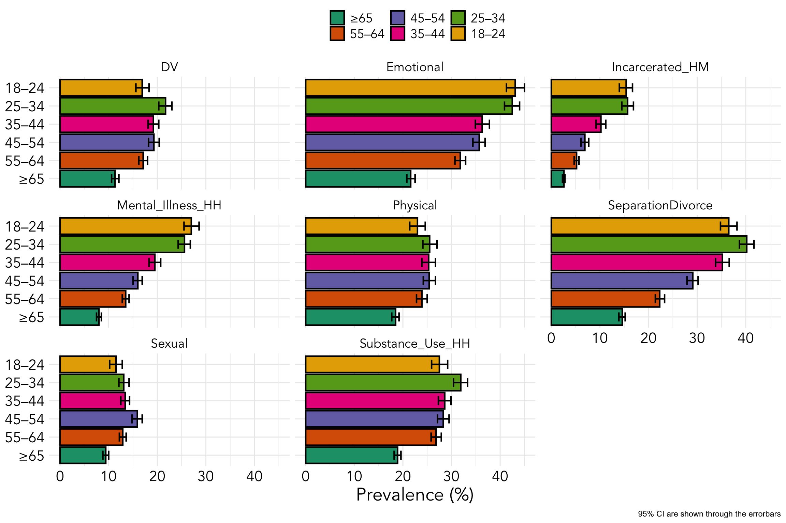
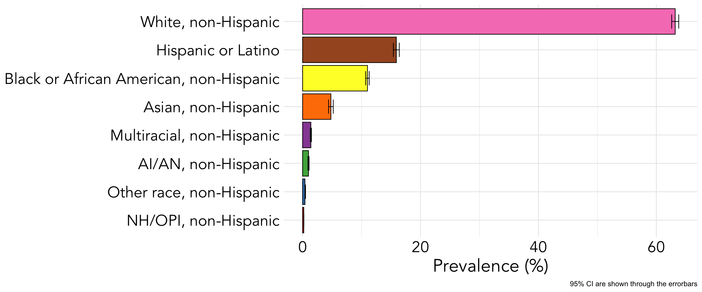
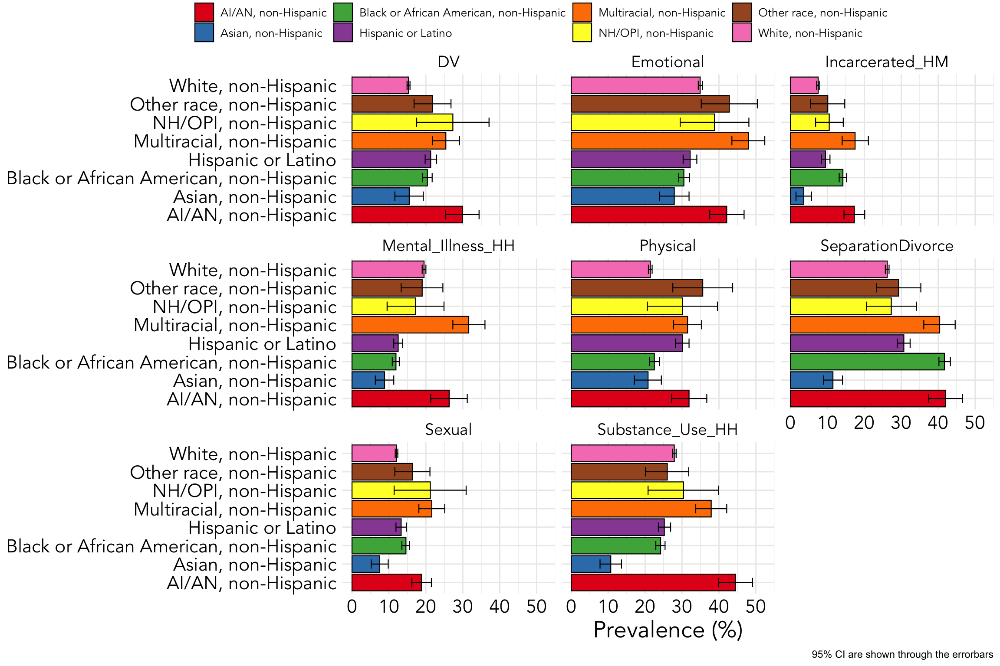
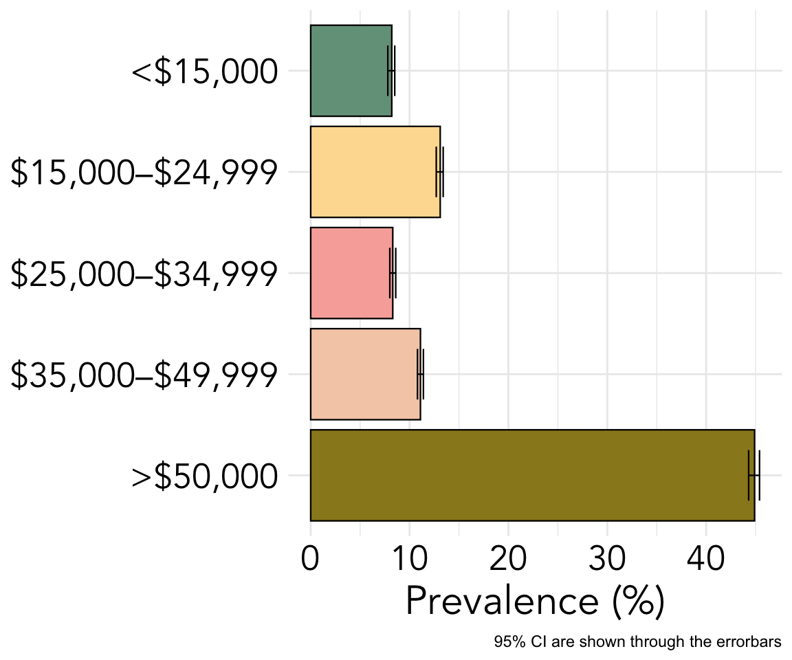
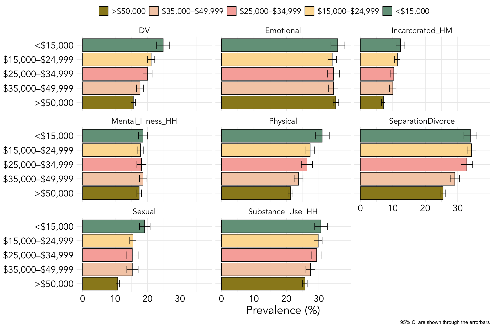
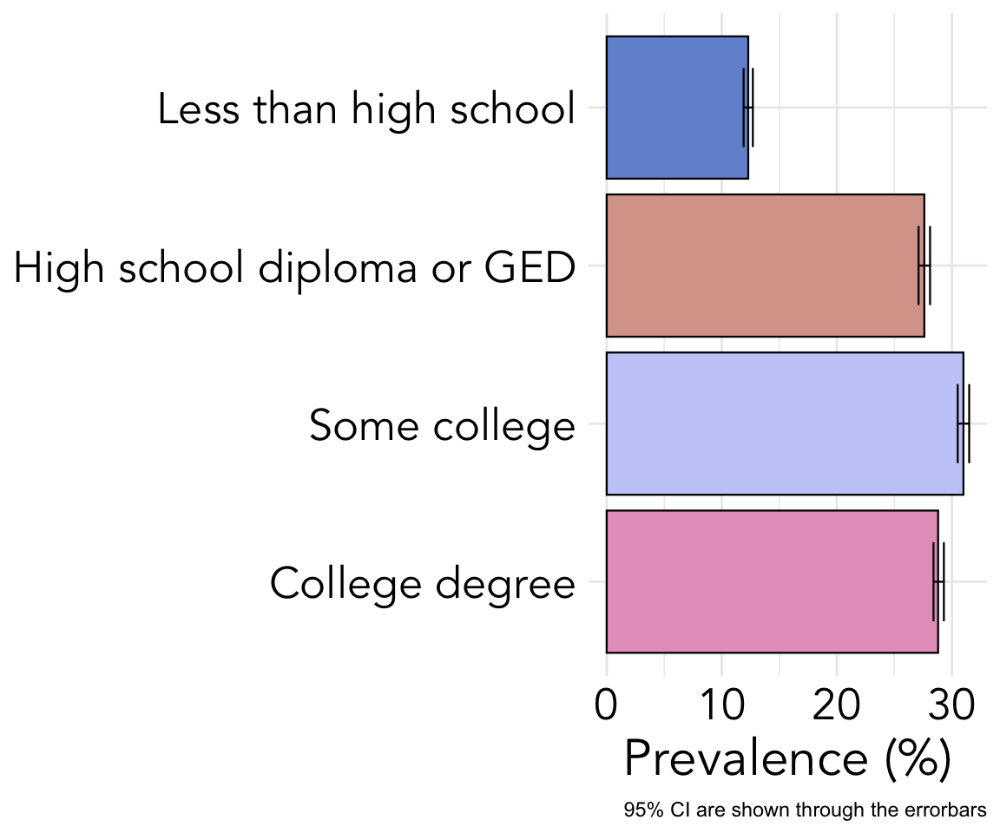
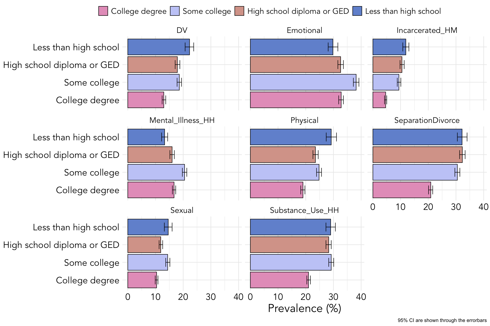
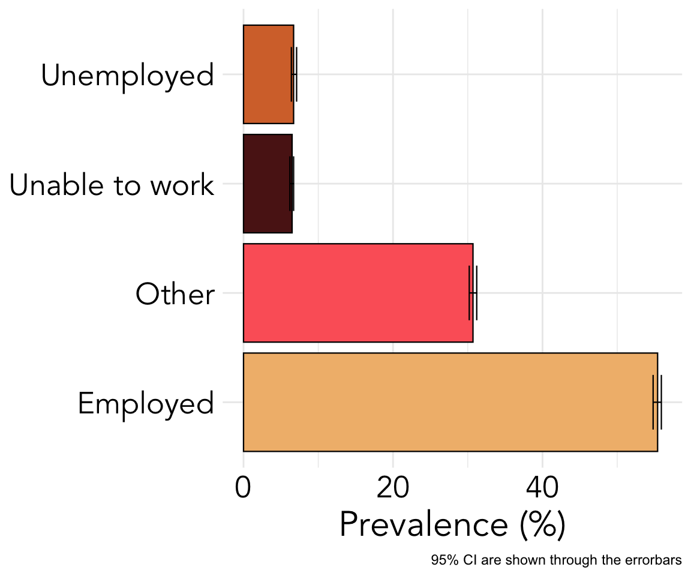
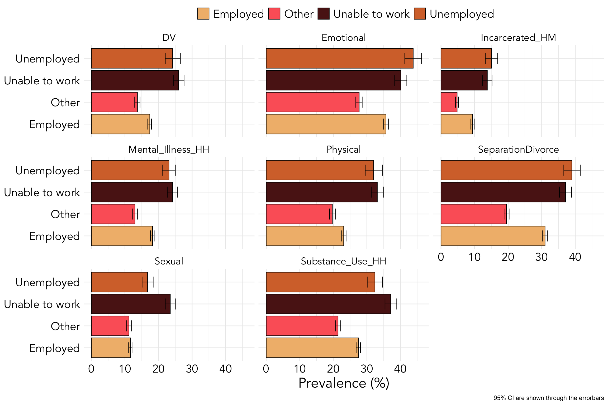

Demographics for Those With Adverse Childhood Events
news
Introduction
This is a similar continuation from my first post, but this time rather than focusing on where adverse childhood events (ACEs) were most prevalent by state and type of adversity, I will be exploring the demographics of those experiencing ACEs in addition to breaking it down by adversity type.
Dataset
The dataset of interest this time scrapped from a CDC website article named, “Prevalence of Adverse Childhood Experiences Among U.S. Adults — Behavioral Risk Factor Surveillance System, 2011–2020” and can be found here in Table 3. As mentioned in the first post, this data was collected from 2011 to 2020 and is the most complete surveys done in the United States evaluating prevalence of ACEs.
Definitions
Adverse Childhood Events
- This dataset has many abbreviations and could be interpreted wrong without the following operational definitions from the study expressed in questions asked (These were not the only questions asked to determine if the person experienced a specific adverse childhood event, but I hope this gives a better idea on how this was defined).
- Emotional abuse (
Emotional):- “How often did a parent or adult in your home ever swear at you, insult you, or put you down?” (answers: never vs. at least once)
- “How often did a parent or adult in your home ever swear at you, insult you, or put you down?” (answers: never vs. at least once)
- Physical abuse (
Physical):- “How often did your parents or adults in your home ever hit, beat, kick, or physically hurt you in any way? Do not include spanking” (answers: never vs. at least once)
- “How often did your parents or adults in your home ever hit, beat, kick, or physically hurt you in any way? Do not include spanking” (answers: never vs. at least once)
- Sexual abuse (
Sexual):- “How often did anyone at least 5 years older than you or an adult, ever try to make you touch them sexually?” (answers: never vs. at least once)
- “How often did anyone at least 5 years older than you or an adult, ever try to make you touch them sexually?” (answers: never vs. at least once)
- Separated/Divorced (
SeparatedDivorced):- “Were your parents separated or divorced?” (answers: no vs. yes)
- “Were your parents separated or divorced?” (answers: no vs. yes)
- Mental illness in the household (
Mental_Illness_HH):- “Did you live with anyone who was depressed, mentally ill or suicidal?” (answers: no vs. yes)
- “Did you live with anyone who was depressed, mentally ill or suicidal?” (answers: no vs. yes)
- Substance Use in household (
Substance_Use_HH):- “Did you live with anyone who used illegal street drugs or who abused prescription medications?” (answers: no vs. yes)
- “Did you live with anyone who used illegal street drugs or who abused prescription medications?” (answers: no vs. yes)
- Domestic violence in household (
DV):- “How often did your parents or adults in your home ever slap, hit, kick, punch or beat each other up?” (answers: never vs. at least once)
- “How often did your parents or adults in your home ever slap, hit, kick, punch or beat each other up?” (answers: never vs. at least once)
- Incarcerated household member (
Incarcerated_HM):- “Did you live with anyone who served time or was sentenced to serve time in prison, jail, or other correctional facility?” (answers: no vs. yes)
- Emotional abuse (
IMPORTANT DISTINCTION REGARDING ACEs: Adverse childhood experiences that are emotional abuse, physical abuse, and sexual abuse are events that happen directly to the child. In comparison, domestic violence in the household, substance use in the household, mental illness in the household, parental separation or divorce, and incarcerated household member are adverse childhood experiences where the child is present (i.e., a bystander). These events create instability and uncertainty for a child resulting in a chronic stress environment and have been shown repeatedly to increase risk for a multitude of illnesses and risky/maladaptive behaviors.
Demographic Categories
We will be exploring 6 different demographics that were also collected alongside the ACEs. To better understand how these demographics result in different prevalence of ACEs, we will be breaking each of the 6 categories down into subsections. The 6 different demographics we will be exploring consist of Gender, Age, Race/Ethnicity, Income, Education, and Employment. Within each of these subsection I will explain the corresponding categories in the begginning to avoid scrolling back and forth from the top to the bottom.
Reasons for Exploration
I hope to further understand how the interaction of different demographics effects prevalence within ACEs categories. Being able to break down the demographics by ACE type will allow for an inspection of prevalence that I have never seen or read. Most studies report the number of ACEs that are shown to result in long-term impairments, but I have never seen a study break down the results to ACE type which could reveal a plethora of information of those most at risk that would otherwise covered up by reporting the number of ACEs experienced.
Demographics of Those Experiencing ACEs
Gender
The gender category consisted of males or females. We know gender is a spectrum and I would like to acknowledge that these two categories do not represent everyone especially as a general population.
Comments:
- Overall, a greater percentage of females report experiencing ACEs compared to males.
- Similarities between genders for ACE reporting is shown for categories of emotional abuse and parental separation or divorce, but females report a greater prevalence of substance use in the household, sexual abuse (this large difference could also be due to under reporting for males because it is very stigmatized), mental illness in the household, and domestic violence in the household compared to males who report a greater prevalence of physical abuse and having an incarcerated household member.
Age
The age category consisted of 6 groupings: 18-24, 25-34, 35-44, 45-54, 55-64, and \(\geq\) 65. Understanding prevalence of ACEs at different ages can provide vital information as to trends through different generations of people.

Comment on Total Prevalence by Age Group:
- The figure above shows the prevalence of ACEs decreasing over generations which is a positive finding!

Comments on Prevalence by Category:
- ACE categories for domestic violence in the household, physical abuse, sexual abuse, parental separation or divorce, and substance use in the household show a general increase between age categories 55-64 through 25-34 but show a decrease in age grouping 18-24. This could be indicative of positive change occurring.
- ACE categories for emotional abuse, mental illness in the household, and having an incarcerated household member show little to no change from age groups 18-24 to 25-34 which demonstrates a continued problem observable over generations.
Race and Ethnicity
The race and ethnicity category consisted of 8 groupings:
White, non-Hispanic,
Hispanic or Latino,
Black or African American, non-Hispanic,
Asian, non-Hispanic,
Multiracial, non-Hispanic,
AI/AN, non-Hispanic(American Indian/Alaska Native),
Other race, non-Hispanic,
NH/OPI, non-Hispanic(Native Hawaiian/Other Pacific Islander).

Comment on Total Prevalence by Race/Ethnicity Group:
- White is a bit over represented here for the population of the United States and more marginalized categories are slightly under represented in this sample.

Comments on Prevalence by Category:
- In particular, for ACE categories of emotional abuse, incarcerated household member, mental illness in the household, and substance abuse in the household, both Multiracial and American Indian’s and/or Alaska Native’s report to have a much higher prevalence of these adverse experiences compared to other races.
- For ACE categories of having an incarcerated household member and parental separation or divorce, people with race/ethnicity of Multiracial, American Indian and/or Alaska Native, or Black/African American report a much higher prevalence of these adverse experiences compared to other races.
- For ACE categories of domestic violence in the household and sexual abuse, people with race/ethnicity of Multiracial, American Indian and/or Alaska Native, and Native Hawaiian/Other Pacific Islander report to have the greatest prevalence of these adverse experiences compared to other races.
Income
The income category consisted of 5 groupings:
<$15,000,
$15,000-$24,999,
$25,000-$34,999,
$35,000-$49,999,
>$50,000.

Comment on Total Prevalence by Income Group:
- A large percentage of those participating in this survey are making greater than $50,000 per year, but not as large as one might expect considering the average income in the US (in 2023) is just below 60,000 according to the census.

Comments on Prevalence by Category:
- ACE categories of domestic violence in the household, parental separation or divorce, physical abuse, and sexual abuse have distinct trends where higher prevalence results in increased impairments in yearly income. These ACE categories compared to the others all stem from an unstable household where safety may not, and in many cases is not, present which has been shown to lead to profound long-term effects that this visual also illustrates clearly.
- ACE categories where an increase in prevalence is more subtle to changes in income per year are substance use in the household and having an incarcerated household member.
- ACE categories where prevalence does not appear to have a severe impact on later income per year are mental illness in the household and emotional abuse.
Education
The education category consisted of 4 groupings:
Less than high school,
High school diploma or GED,Some college,College degree.

Comment on Total Prevalence by Education Group:
- According to the National Center for Education Statistics the dropout rate from high school was 8.3% in 2010 and 5.2% in 2021, so the survey’s population generally have higher prevalence of not finishing high school compared to the national average.

Comments on Prevalence by Category:
- ACE categories for domestic violence in the household, physical abuse, sexual abuse, parental separation or divorce, substance abuse in the household, and having an incarcerated household member show a clear trend that greater prevalence results in much higher rates of dropping out of high school.
- Both emotional abuse and mental illness in the household show a greater prevalence of dropping out of college, but interestingly, those with higher prevalence report also having a college degree compared to it being less prevalent to report dropping out of high school.
- Overall, it should be noted that those reporting ACEs of physical abuse, substance abuse in the household, parental separation or divorce, and emotional abuse appear to have a significant impact on dropping out of high school because around 30% of people reporting not completing high school also report one of these ACEs which is a huge problem.
Employment
Employment consists of 4 groupings:
Other,
Unemployed,
Unable to work,
Employed.

Comment on Total Prevalence by Employment Group:
- The figure above shows that the majority of those in the survey are employed or other. I was unable to find anything conclusive on what the category other meant in this survey, but based on some searching the “other” category used when asked about employment often refers to self-employment or being an independent contractor.

Comments on Prevalence by Category:
- Most categories of ACEs have those reporting unemployment or unable to work as relatively the same prevalence (i.e., domestic violence, physical abuse, and mental illness in the household), but those who have experienced adversity of emotional abuse, parental separation or divorce, or having an incarcerated household member are shown to report more unemployment compared to unable to work.
- Both sexual abuse and substance use in the household report higher prevalence of unable to work compared to unemployed.
- All ACE categories besides sexual abuse report higher prevalence of employed compared to “other” whereas those who report sexual abuse have the same prevalence for being employed compared to “other”.
Discussion and Limitations
All of the explorations done in this blog were based on visual inspection and comparison through inspection (i.e., no statistical tests were run). I do not have the original data from this study which is limiting. Another factor that should be mentioned is that this data was collected through surveys and was likely to have a response bias from the low response rate.
I have yet to see anyone do this or explore this avenue of how the type of ACE effects a person, and based on the findings, it should be further looked into how or if differing types of ACEs have different risk factors along with result in different long-term effects for the person. If we know certain populations are more at risk for certain ACEs, our goal should be targeting those populations to prevent, or limit, the ACE before it occurs.